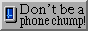

<!DOCTYPE html>
<html>
<head>
    <title>Footer with Larger Images</title>
    <style>
        body {
            background-image: url('gradient.jpeg');
            background-size: cover;
            background-repeat: no-repeat;
        }

        footer {
            text-align: center;
            padding: 10px;
            background-color: rgba(255, 255, 255, 0); /* Semi-transparent white */
          }

        footer img {
            width: 100px; /* Adjust the width as needed */
            height: auto;
            margin: 0 5px;
        }

        footer a {
            text-decoration: none;
        }
    </style>
</head>
<body>
    <footer>
        
        
        <a href="https://www.mozilla.org/en-US/firefox/"></a>
        
        <a href="https://github.com/Ghostblackout"></a>
        
    </footer>
</body>
</html>